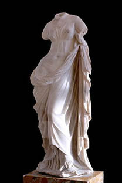

AFRODITA
MITOLOGIA GRIEGA
Afrodita Urania y Afrodita Pandemos
 Afrodita es, en la mitologÌa griega, la diosa del amor, la lujuria, la belleza, la sexualidad y la reproducciÛn.
Aunque a menudo se alude a ella en la cultura moderna como ´la diosa del amorª, es importante seÒalar que normalmente no era el amor en el sentido cristiano o rom·ntico, sino especÌficamente Eros (atracciÛn fÌsica o sexual). Su equivalente romana es la diosa Venus.
Afrodita tiene numerosas equivalentes: Inanna en la mitologÌa sumeria, AstartÈ en la fenicia, Turan en la etrusca y Venus en la romana.
La ësurgida de la espumaí Afrodita naciÛ del mar, cerca de Pafos (Chipre) despuÈs de que Crono cortase durante la Titanomaquia los genitales a Urano con una hoz adamantina y los arrojase tras Èl al mar. En su TeogonÌa, HesÌodo cuenta que los genitales ´fueron luego llevados por el piÈlago durante mucho tiempo.
Fuente: wikipedia
Orígenes
 A su alrededor surgÌa del miembro inmortal una blanca espuma y en medio de ella naciÛ una doncellaª ya adulta.
A su alrededor surgÌa del miembro inmortal una blanca espuma y en medio de ella naciÛ una doncellaª ya adulta.
Este mito de Venus (el nombre romano de Afrodita) nacida adulta, Venus AnadiÛmena (ëVenus saliendo del marí), fue una de las representaciones icÛnicas de Afrodita, famosa por la admiradÌsima pintura de Apeles, hoy perdida, pero descrita por Plinio el Viejo en su Naturalis Historia.
Por esto, Afrodita es de una generaciÛn anterior a la de Zeus. Homero cuenta en el libro V de la IlÌada otra versiÛn sobre su origen, seg˙n la cual serÌa hija de Dione, quien era la diosa oracular original (´Dioneª significa simplemente ëdiosaí, ëdiosaí, el genitivo de ´Zeusª) en DÛdona.